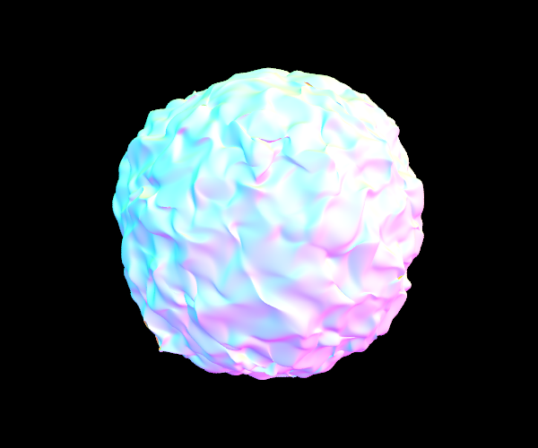
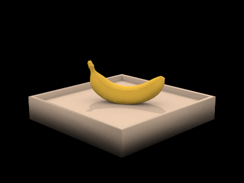

CS 184: Computer Graphics and Imaging, Spring 2023
Project 3-1: Path Tracer
Jeremy Ferguson
Overview
In this project, I learned about algorithms for rendering 3D scenes. This involved efficiently testing intersection with points, raytracing, and various methods of sampling and lighting scenes. Overall, it was a very thorough introduction to these concepts that allowed me to really focus in on the minutiae of a scene, as I compared countless different render settings and reference images to try and get the best-looking images.
Part 1: Ray Generation and Scene Intersection (20 Points)
Walk through the ray generation and primitive intersection parts of the rendering pipeline.
For ray generation, my algorithm first computes the location of the corners of the camera sensing plane in camera space, then constructs a ray from the origin to the given x and y coordinates, interpolated into
the camera sensing plane. Then, the direction vector is multiplied by the camera's rotation matrix and the origin is translated to the camera's location.
For primitive intersection, the ray tests intersection by finding the values of t which represent points along the ray where the primitive is intercepted. From here, the t values
are checked to see if they are within the bounds of the ray's min_t and max_t, to see whether they should be ignored or not.
Explain the triangle intersection algorithm you implemented in your own words.
For checking triangle intersection in the has_intersection() method, I implemented the Möller–Trumbore algorithm. This algorithm computes the t-value of the ray's intersection with the triangle's plane, and the barycentric coordinates of the intersection point simultaneously using matrix multiplication.
For finding the actual intersection point in the intersect() method, I additionally had to find the surface normal at the intersection point. To do this, I re-computed the barycentric coordinates. To avoid having to calculate the Möller–Trumbore algorithm again in the intersect() function,
I computed the barycentric coordinates in a different way. To do this, I found the area of the 3 subtriangles formed by diving the triangle by the intersection point. Then, I got the ratios of these areas with respect to the total area. This gives the
barycentric coordinates, which can then be used to compute a weighted average of the vertex normals to get the normal at the intersection point.
Images with normal shading for two small .dae files:
Part 2: Bounding Volume Hierarchy (20 Points)
Walk through your BVH construction algorithm. Explain the heuristic you chose for picking the splitting point.
My BVH construction algorithm starts out by expanding the bounding box to encapsulate all of the bounding boxes of all the primitive objects within it. Then, it checks to see if it has a small enough number of objects to be a leaf node, or if it should make child BVH nodes.
If it does split, it must then choose which axis to split on and where that split point should be.
It does this by iterating over all 3 axes and checking the centroids of each primitive within the
BVH to see which side of the axis midpoint it lies on. Whichever axis midpoint is closest to getting an even 50-50 split of primitives is chosen as the axis to split on.
Next, the algorithm uses std::partition to sort and split the primitives according to which side of the axis midpoint they are on. If all primitives would be on one side of the split, they are randomly split to have half in one partition and half in another.
Finally, the algorithm recursively constructs the child BVH nodes.
Images with normal shading for a few large .dae files:
|
beast.dae
|
maxplanck.dae
|
|

blob.dae
|
Compare rendering times on a few scenes with moderately complex geometries with and without BVH acceleration. Present your results in a one-paragraph analysis.
For this experiment, I rendered teapot.dae, banana.dae, building.dae, and bench.dae, with 1 sample per pixel, with and without BVH acceleration. These were chosen because they were small enough that they could be rendered without BVH acceleration, but large enough to really see the difference
in render time.With BVH acceleration, all the images took between 0.15 and 0.3 seconds. Without BVH acceleration, they take much longer, ranging from 20 seconds for teapot.dae, to 604 seconds for bench.dae. This contrast shows the huge speedup that BVH acceleration provides.
Part 3: Direct Illumination (20 Points)
Walk through both implementations of the direct lighting function.
For hemisphere sampling of direct lighting, the function will take a number of samples over a hemisphere.
It will translate those into the hemisphere produced by the surface normal, and construct a ray starting at the
point being sampled. From there, it will cast the ray out into space, checking if it has any intersections. If it finds an intersection,
it will get the radiance emitted from that object. Now, the actual reflected light needs to be calculated, by using the BSDF to compute the fraction of light reflected at the output angle.
The last step in this sample is dividing by the PDF of the hemisphere sampler and the cosine of the input angle, according to Lambert's Law.
This sampling step is repeated, and at the end the radiance is divided by the number of samplings.
For importance sampling of direct lighting, the process is very similar, except instead of sampling over a hemisphere, it samples from each light source directly. Each light source is sampled either several times if it is an area
light, or once if it is a point light. For each sample, a ray is drawn between the point being sampled and the light, and if there are no intersections, the light will reach the sampled point. This is essentially a shadow test.
Finally, the irradiance is computed like before, by multiplying by the BSDF, the cosine of the input angle, and dividing by the PDF of the light sampler.
Show some images rendered with both implementations of the direct lighting function.
|
Uniform Hemisphere Sampling
|
Light Sampling
|
|
CBbunny.dae
|
CBbunny.dae
|
|
CBspheres_lambertian.dae
|
CBspheres_lambertian.dae
|
 banana.dae
banana.dae
|

banana.dae (hemisphere sampling doesn't work with point lights)
|
Focus on one particular scene with at least one area light and compare the noise levels in soft shadows when rendering with 1, 4, 16, and 64 light rays (the -l flag) and with 1 sample per pixel (the -s flag) using light sampling, not uniform hemisphere sampling.
|
1 Light Ray (CBbunny.dae)
|
 4 Light Rays (CBbunny.dae)
4 Light Rays (CBbunny.dae)
|
|
16 Light Rays (CBbunny.dae)
|
64 Light Rays (CBbunny.dae)
|
There is a huge difference in the noise levels in soft shadows as the number of light samples increases. If a pixel is only sampled once, it may be blocked in that one sample if it is in an area where part of the area light is blocked and part is unobstructed. However, when many light samples are taken, in the soft shadow area, some samples will be unobstructed and some will be obstructed, so it will smooth out and this ratio will
approach what it would look like in the physical world.
Compare the results between uniform hemisphere sampling and lighting sampling in a one-paragraph analysis.
Direct lighting results in much less noise than uniform hemisphere sampling. This is because uniform hemisphere sampling will result in a lot of samples that don't hit any light, because the lights are only in a small portion of the scene. In importance sampling, we ensure that every point that is in range of a light will have some light hit it,
and every area partially obstructed by light will have some of its light hit it. This results in less noise. Another effect is the blurring of lights. This is because in hmisphere sampling, the points right next to the area lights will occasionally sample a direction right next to them and reflect some light. In importance sampling, however, it will not do this, as it will find an intersection.
Part 4: Global Illumination (20 Points)
Walk through your implementation of the indirect lighting function.
My implementation starts out by getting the one-bounce radiance of the point being sampled. Then, it samples an incoming angle and gets its BSDF value.
Next, it checks to see if the current ray's depth is greater than 1, which is an indicator of whether it should continue recursively raytracing or not.
If so, it constructs a new ray with an origin at the intersection point and in the direction of the sampled incoming angle. Next, it checks if that ray intersects anything. If so,
it can then use the Russian Roulette algorithm to see if it should actually incorporate the radiance into its estimate, in order to get an unbiased pathtracing estimate.
It draws from a Bernoulli distribution of 0.35, and if it gets a 1 then it recursively runs the next level of pathtracing. It then adds this indirect radiance into the final output radiance by multiplying it by the cosine of the incoming angle,
BSDF value of the material, and dividing by the PDF of the incoming angle sample and the Russian Roulette continuation PDF.
Show some images rendered with global (direct and indirect) illumination. Use 1024 samples per pixel.
Pick one scene and compare rendered views first with only direct illumination, then only indirect illumination. Use 1024 samples per pixel. (You will have to edit PathTracer::at_least_one_bounce_radiance(...) in your code to generate these views.)
|
Only direct illumination (spheres_lambertian.dae)
|
Only indirect illumination (spheres_lambertian.dae)
|
The direct lighting only captures the light that directly comes from the area light at the top. The walls and the tops of the spheres are very clear, but everything else is pretty dark, and uniform except for a small area of soft shadow.
The indirect lighting captures the light reflected off of other surfaces, most notably the colors from the walls, which are reflected on the floors and the spheres.
For CBbunny.dae, compare rendered views with max_ray_depth set to 0, 1, 2, 3, and 100 (the -m flag). Use 1024 samples per pixel.
|
max_ray_depth = 0 (CBbunny.dae)
|
max_ray_depth = 1 (CBbunny.dae)
|
|
max_ray_depth = 2 (CBbunny.dae)
|
max_ray_depth = 3 (CBbunny.dae)
|
|
max_ray_depth = 100 (CBbunny.dae)
|
Past a depth of 2, the image looks very similar as the pathtracing depth increases. The slight differences that can be seen are mostly in the coloration of the
bunny, as slightly more color is reflected from the walls.
Pick one scene and compare rendered views with various sample-per-pixel rates, including at least 1, 2, 4, 8, 16, 64, and 1024. Use 4 light rays.
|
1 sample per pixel (banana.dae)
|
2 samples per pixel (banana.dae)
|
|
4 samples per pixel (banana.dae)
|
8 samples per pixel (banana.dae)
|
|
16 samples per pixel (banana.dae)
|
64 samples per pixel (banana.dae)
|
 1024 samples per pixel (banana.dae)
1024 samples per pixel (banana.dae)
|
Increasing the number of samples per pixel has a noticeable effect on the amount of noise in the scene, as it is able to converge to the pixel's true value.
Part 5: Adaptive Sampling (20 Points)
Explain adaptive sampling. Walk through your implementation of the adaptive sampling.
Adaptive sampling allows us to speedup rendering while still keeping noise down to an acceptable level. It does this by computing the variance of the pixel samples as it goes, so that pixels that converge quicker don't need to be sampled exhaustively, while pixels that take longer to converge can be sampled much more without the whole render taking as long.
My implementation keeps track of the sum of the pixel samples' illuminance, as well as the sum of the squares of the illuminance. After every batch of samples (set by a command line parameter), the algorithm recomputes the mean and the variance of the pixel samples. It then checks if the amount of noise in the pixel is within an acceptable range, measured by the
tolerance level set by the user. If it has been rendered to an acceptable level of noise, it breaks out of the sampling loop. Otherwise, it continues sampling, up to a max sampling rate. Afterwards, it takes the average of the sampled radiance by dividing by the number of samples taken.
Pick two scenes and render them with at least 2048 samples per pixel. Show a good sampling rate image with clearly visible differences in sampling rate over various regions and pixels. Include both your sample rate image, which shows your how your adaptive sampling changes depending on which part of the image you are rendering, and your noise-free rendered result. Use 1 sample per light and at least 5 for max ray depth.
|
Rendered image (CBspheres_lambertian.dae)
|
Sample rate image (CBspheres_lambertian.dae)
|
|
Rendered image (CBbunny.dae)
|
Sample rate image (CBbunny.dae)
|